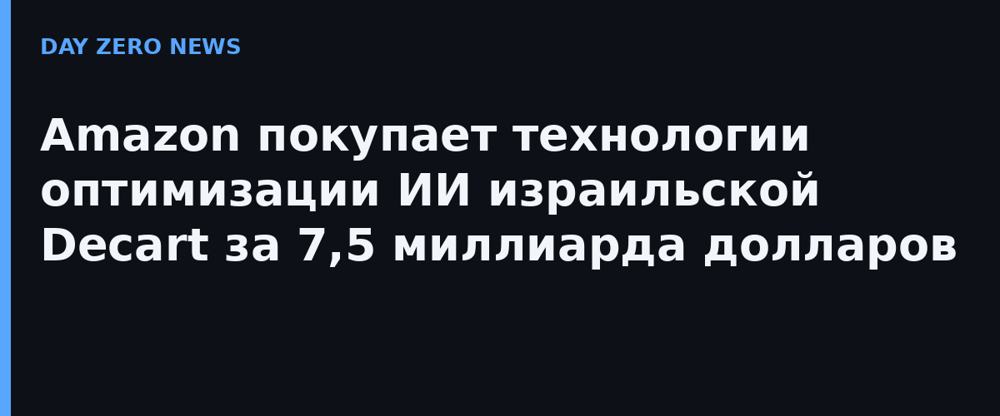

Речь не о покупке компании целиком: Amazon забирает проприетарную технологию Decart Optimization Stack (DOS) — программный стек, который позволяет запускать ИИ-модели эффективно на чипах Nvidia, Amazon и Google. Вместе с технологией к Amazon переходят сооснователи Decart — генеральный директор Дин Лейтерсдорф, Ориан Лейтерсдорф и Маше Шалев, — а с ними команда исследователей и инженеров по ИИ. Об этом говорится в официальном анонсе Amazon от 23 ноября 2026 года; там же указано, что закрытие сделки требует обычных условий, включая одобрение регуляторов.
Сумму в 7,5 миллиарда долларов называет Bloomberg (на него ссылается и TechCrunch); сама Amazon стоимость в пресс-релизе не раскрыла. По данным Bloomberg, ИИ-модели Decart Amazon не покупает — то есть интерактивная мировая модель Oasis 3, способная симулировать часы фотореалистичной езды, и инструменты генерации видео остаются вне сделки. Формально это классическая схема «технология плюс люди»: продукт остаётся, команда и оптимизатор уходят к покупателю.
До сих пор чипы Trainium использовались в собственных дата-центрах Amazon, теперь компания готовится продавать их клиентам — напрямую конкурируя с Nvidia. Стек DOS как раз снижает порог переезда: клиентам проще запускать свои нагрузки на чипах Amazon, а не на эталонных чипах Nvidia. «Каждый скачок вперёд в ИИ начинается с того, чтобы выжать больше из каждого чипа», — заявил Питер ДеСантис, старший вице-президент Amazon по фундаментальным моделям, кастомным чипам и квантовым вычислениям. Сотрудничать с Decart компания начала ещё в 2025 году, и команда уже показывала результаты производительности на Trainium.
Decart построила репутацию на мировых моделях реального времени и инструментах генерации ИИ-видео, но под капотом компании всегда была именно оптимизация под «железо». На фоне гонки за вычислительные ресурсы это показательный ход: крупные облачные компании всё чаще покупают не модели, а способность выжимать максимум из собственных чипов. Сооснователь и CEO Decart Дин Лейтерсдорф описал это так: в Amazon команде доступны масштаб, клиенты и инфраструктура, которых ей не хватало для роста.